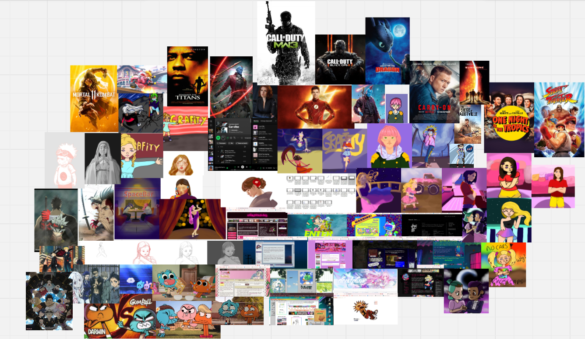

class: center, middle <!-- In deze textarea kan je in Markdown de slides aanpassen, zie https://github.com/gnab/remark/wiki voor alle mogelijkheden! --> # Chloë's Adventures ## De inspiratie voor mijn garden ### Iets over mezelf --- # Agenda 1. Mijn eerste idee 2. Links voor inspo 3. Afbeeldingen/voorbeelden 4. samevatting --- # Mijn eerste idee - Desktop vibe + - Mijn intresses - waarom? - Tekeningen (digitaal, schets, animatie, schilderen) - Games (xbox, playstation, wii, wiiu, nintendo) - Films (allerlei genres) - superhero's (van jongs af aan) - Anime (nog meer mogelijkheden) - Muziek (familie) --- # 10 links ### Persoonlijk (hoe maak ik iets mijn eige) 1. https://olliveen.neocities.org/ (desktop idee) 2. https://daikonet.neocities.org/ (andere vorm van desktop, cursor aanpassing) 3. https://thegardenofmadeline.neocities.org/ (Desktop kleuren en vormen) 4. https://codecreature.net/warnings/?redirect=/home/ (teken stijl, kleuren, font) 5. https://atinytrashbag.neocities.org/ (vormgeving) 6. https://ninacti0n.art/ (vormgeving, kleuren, font, achtergrond) 7. https://uncannyvalley.neocities.org/ (creepy, darkmode) 8. https://dir.aelysia.net/ (button, animaties, tekeningen, stijl, lightmode) 9. https://runegod.net/ (animatie, teken inhoud) 10. https://ohmi.art/home (stijl, kleur, tekeningen, darkmode) 11. https://leviathren.neocities.org/home (stijl, darkmode) 12. https://atomicgothic.neocities.org/ (animatie, tekenstijl, intro) 13. https://layercake.moe/ (animatie, kleur, stijl) --- #### Mijn afbeeldingen Ik wil graag mijn eigen intresses laten zien. - wat komt er in terug? <p></p> --- <!-- Slide zonder titel! --> Hieronder een voorbeeld voor het opnemen van een afbeelding. Het is iets lastiger om met Remarkjs een heleboel afbeeldingen op één slide op te nemen, je hebt daar veel custom CSS voor nodig. Een handige workaround is om in een fotobewerkingsprogramma een aantal collages van de door jou gevonden afbeeldingen te maken en die op te nemen als afbeelding op de slide...  --- background-image: url(./placeholder.svg) ... of als [background image](https://github.com/gnab/remark/wiki/Markdown#background-image) voor een slide. --- # Introtekst - Ik ben van plan om een soort chill plek te maken waar mensen op hun gemak door de pagina kunnen kijken, om geinspireerd te raken. - Ik word vaak geinspireerd als ik naar andere kijk, en ik zou dit ook graag voor andere kunnen doen. Wat wil je een ander vertellen over je onderwerp - eige tekeningen - Desktop customized (welcome to my world) Ik wil het eerst hebben over tekenen, en animaties, en daarna toevoegen met andere subjects die me intreseren, zoals games, en films. <!-- Laat onderstaande staan anders breekt je presentatie -->